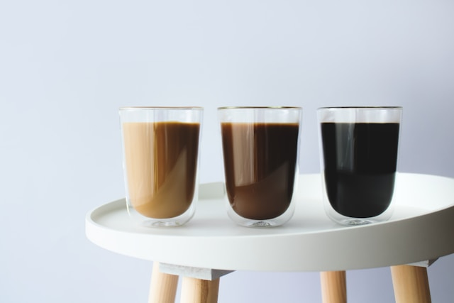
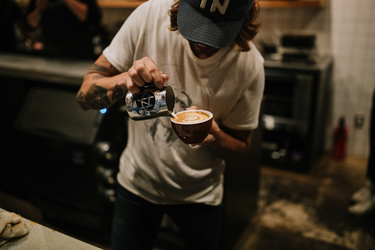

El arte de preparar café
Cada taza de café representa una experiencia cuidadosamente elaborada. Seleccionamos granos de alta calidad, tostados localmente, para ofrecer un sabor profundo, equilibrado y con carácter. Nuestro compromiso es llevar a cada cliente un café que no solo despierte, sino que inspire.

Los granos que usamos provienen de fincas sostenibles en Colombia, Etiopía y Brasil. Nos enorgullece trabajar con productores que respetan la tierra y el proceso artesanal del cultivo. Cada origen aporta un perfil único: floral, afrutado o con notas de cacao, lo que permite crear mezclas y cafés de origen únicos en la ciudad.
Nuestros tipos de café
Rubio
El café tostado rubio es tostado en menos tiempo, tiene un cuerpo ligero y sabores suaves.
Medio
Nuestro café con tostado medio es balanceado con cuerpo y sabores agradables y enriquecidos.
Oscuro
Los cafés con tostado oscuro presentan un cuerpo completo y sabores fuertes y robustos.
Una taza, un momento especial
Creemos que una buena taza de café puede mejorar tu día. Por eso, cuidamos cada detalle: la calidad de nuestros granos, la atención de nuestros baristas y el ambiente acogedor que hemos creado. Queremos que cada visita se convierta en parte de tu rutina, y cada taza, en un momento especial..
